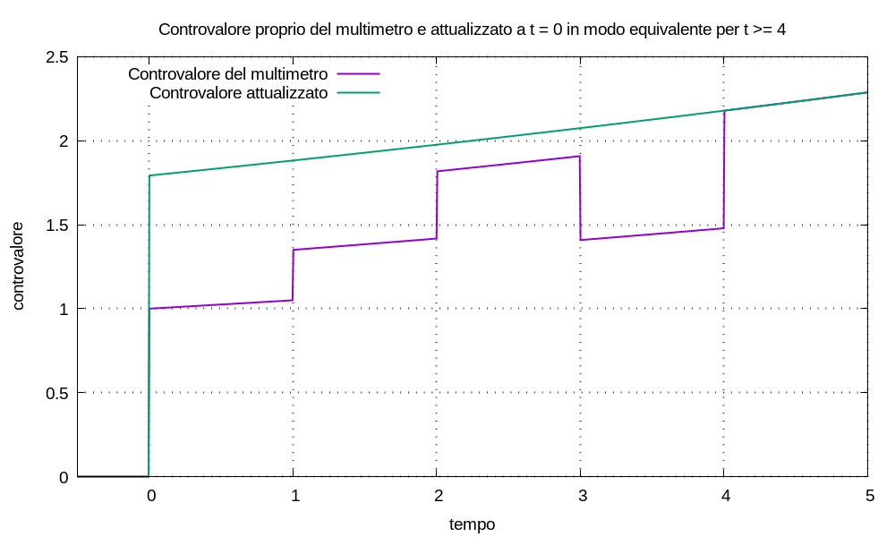
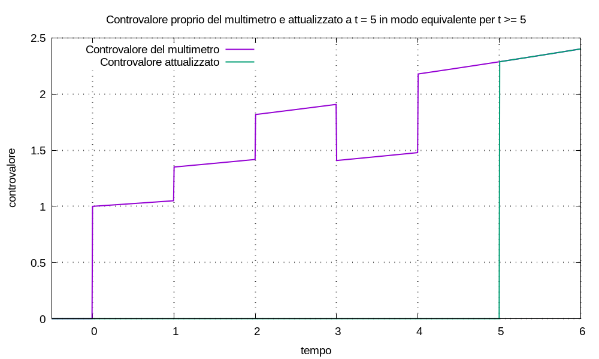

Consideriamo un multimetro regolato a un certo valore di remunerazione λ; con un solo versamento all’istante t0, la movimentazione si scrive:
M(t) = C0 δ(t - t0)
e il controvalore:
U(t) = C0 u(t - t0) esp[λ (t - t0)]
all’istante t1 > t0 il controvalore vale:
U(t1) = C0 u(t1 - t0) esp[λ (t1 - t0)] = C0 esp[λ (t1 - t0)]
Lasciando invariato il valore della remunerazione, consideriamo la movimentazione:
N(t) = U(t1) δ(t - t1)
il controvalore corrispondente risulta:
V(t) = U(t1) u(t - t1) esp[λ (t - t1)]
sostituendo il valore di U(t1) e semplificando:
V(t) = C0 esp[λ (t1 - t0)] u(t - t1) esp[λ (t - t1)]
⇒ V(t) = C0 u(t - t1) esp[λ (t1 - t0 + t - t1)]
⇒ V(t) = C0 u(t - t1) esp[λ (t - t0)]
per ogni istante di tempo t ≥ t1 i gradini di Heaviside sono pari a uno e la differenza tra i due controvalori vale:
V(t) - U(t) = C0 esp[λ (t - t0)] - C0 esp[λ (t - t0)] = 0
Ciò significa che: per t ≥ t1 un impulso in ingresso d’entità C0 all’istante t0 è equivalente a un impulso in ingresso d’entità C0 esp[λ (t1 - t0)] all’istante t1. Quindi se c’interessano solo i valori di controvalore per t ≥ t1 possiamo spostare a piacere l’istante dell’impulso, purché sia prima di t1 e adeguiamo la sua ampiezza.
Denominiamo quest’operazione di spostamento e adeguamento degl’impulsi attualizzazione equivalente agl’effetti futuri.
Notiamo la simmetria: cosí come V(t) è equivalente a U(t), viceversa U(t) è equivalente a V(t); cioè è possibile attualizzare gl’impulsi in ingresso sia verso il futuro che verso il passato.
Osserviamo che, essendo il multimetro un sistema lineare per cui vale la sovrapposizione delle cause e degli effetti: quando la movimentazione è una combinazione lineare d’impulsi, possiamo attualizzare tutti gl’impulsi all’istante che desideriamo, ottenendo un controvalore equivalente nel futuro. Definito l’indice k variabile tra 0 e un limite superiore K, sia la movimentazione:
M(t) = Σk Ck δ(t - tk)
il controvalore risulta:
U(t) = Σk Ck u(t - tk) esp[λ (t - tk)]
attualizziamo tutti gl’impulsi all’istante ta, risulta:
N(t) = δ(t - ta) Σk Ck esp[λ (ta - tk)]
il controvalore corrispondente risulta:
V(t) = u(t - ta) esp[λ (t - ta)] Σk Ck esp[λ (ta - tk)]
e per ogni t ≥ max(tK, ta) risulta V(t) = U(t).
Esempio (attualizzazione) Configurato un multimetro con remunerazione λ = log1p(0,05), stabiliamo la seguente tupla d’ingressi:
{ (t0; C0), (t1; C1), (t2; C2), (t3; C3), (t4; C4) }con valori:
{ (0; 1), (1; 0,3), (2; 0,4), (3; -0,5), (4; 0,7) }definito l’indice k tra 0 e 4, la corrispondente movimentazione si scrive:
M(t) = Σk Ck δ(t - tk)attualizziamo tutti gl’impulsi all’istante ta = t0 = 0, in modo che risulti un solo impulso:
N(t) = δ(t - ta) C' = δ(t - ta) Σk Ck esp[λ (ta - tk)]e il capitale attualizzato risulta:
C' = Σk Ck esp[λ (ta - tk)] ≈ 1,7924990101860847Il controvalore attualizzato risultante è uguale a quello proprio per t ≥ t4.

Anche senza discussione: possiamo capire la seguente figura.
